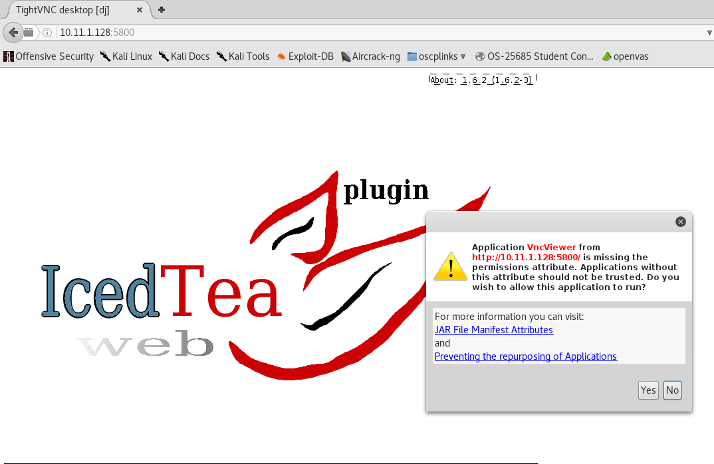

root@kali:~/gen/smtp# nc -nv 10.11.1.128 25
(UNKNOWN) [10.11.1.128] 25 (smtp) open
220 dj.acme.local Microsoft ESMTP MAIL Service, Version: 5.0.2195.6713 ready at Mon, 26 Dec 2016 21:31:01 +0200
vrfy bob
vrfy root
